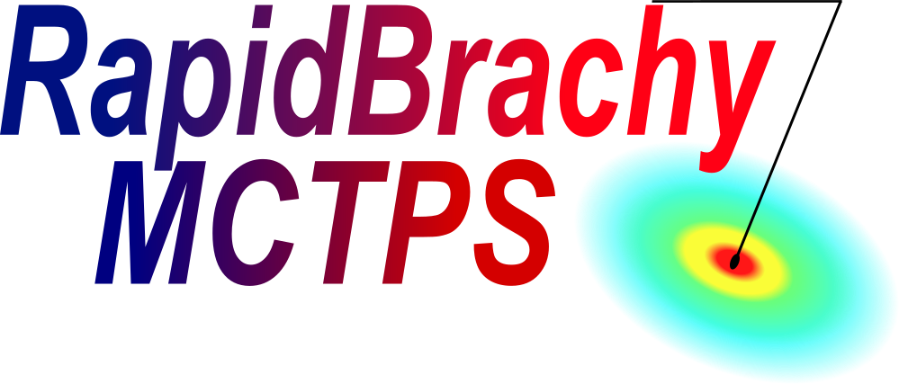

About RapidBrachyMCTPS

What is RapidBrachyMCTPS?
-
Comprehensive Planning: RapidBrachyMCTPS is a complete brachytherapy treatment planning system (TPS) equipped with a graphical user interface (GUI). Users can load DICOM-RT images, import and modify plans, calculate patient dose, perform dwell time optimization, and more.
-
Calculation Engines: Under the hood, the software relies on the brachyutils library for core planning functionality. Dose calculations are powered by RapidBrachyMC, a Geant4-based Monte Carlo engine, while also supporting conventional TG-43 formalism.
-
Architecture: The software is built on the Slicer Custom App Template (SlicerCAT), a lightweight wrapper around the core 3D Slicer application. This architecture allows users to leverage Slicer’s native capabilities for tasks like image registration and contouring. It can also be deployed as a custom module directly inside 3D Slicer.
Disclaimer
RapidBrachyMCTPS is research software. It is not represented as an approved, certified or commissioned clinical treatment-planning system or medical device. The software and associated documentation are provided without warranties concerning clinical performance, regulatory approval, treatment suitability, or fitness for patient care. Users are responsible for independently verifying calculations, results, data transformations, source models, applicator models, material assignments, dose distributions, optimization outputs, and exported files. Users are also responsible for determining whether their intended use complies with applicable institutional, ethical, professional, legal, and regulatory requirements. No treatment decision should be based on RapidBrachyMCTPS output without appropriate commissioning, independent verification, qualified professional review, institutional authorization, and compliance with applicable law.
3D Slicer
- RapidBrachyMCTPS uses the 3D Slicer GUI as a frontend while utilizing built-in modules to perform supplementary tasks.
- 3D Slicer is an open-source, extensible application for visualization and medical image analysis. You can learn more about the platform on the official 3D Slicer website.
- We highly recommend familiarizing yourself with the software's user interface, tools, and shortcuts by reviewing the 3D Slicer User Interface guide.
License
How to cite
If you use RapidBrachyMCTPS for research, please cite the following in your publications:
- Famulari G, Renaud MA, Poole CM, Evans MDC, Seuntjens J, Enger SA. RapidBrachyMCTPS: a Monte Carlo-based treatment planning system for brachytherapy applications. Phys Med Biol. 2018 Aug 30;63(17):175007.
- Antaki M, Deufel CL, Enger SA. Fast mixed integer optimization (FMIO) for high dose rate brachytherapy. Phys Med Biol. 2020 Nov;65(21):215005
- Glickman H, Antaki M, Deufel C, Enger SA. RapidBrachyMCTPS 2.0: A Comprehensive and Flexible Monte Carlo-Based Treatment Planning System for Brachytherapy Applications. 2020 [cited 2024 May 5]; Available from: https://arxiv.org/abs/2007.02902.
- Antaki M, Renaud MA, Morcos M, Seuntjens J, Enger SA. Applying the column generation method to the intensity modulated high dose rate brachytherapy inverse planning problem. Phys Med Biol. 2023 Mar 21;68(6):065007.
- Jafarzadeh H, Quetin S, Kalinowski J, Farahnak F, Enger SA. BrachyUtils: a high-throughput and modular brachytherapy treatment planning system built for Python scripting. IEEE Trans Radiat Plasma Med Sci. 2026;1-1. doi:10.1109/TRPMS.2026.3700423.
- Kalinowski J, Jafarzadeh H, Farahnak F, Enger SA. RapidBrachyMCTPS 3.0: recent updates and validation of RapidBrachyMCTPS, a Monte Carlo-based brachytherapy treatment planning system. Phys Med Biol. 2026;71(12):12NT02. doi:10.1088/1361-6560/ae72e9